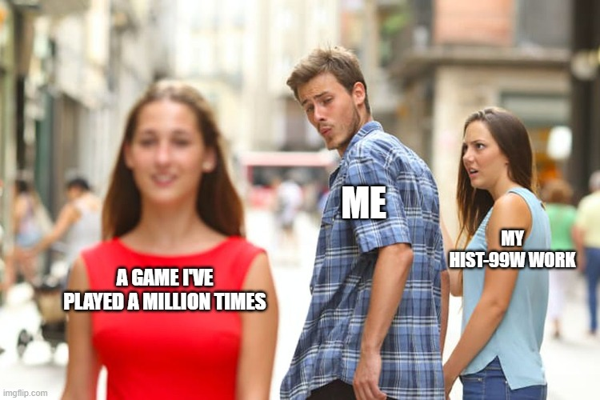
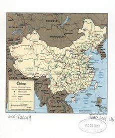
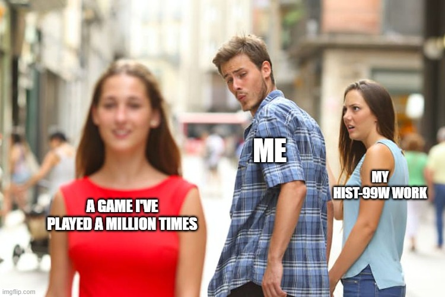
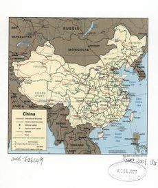
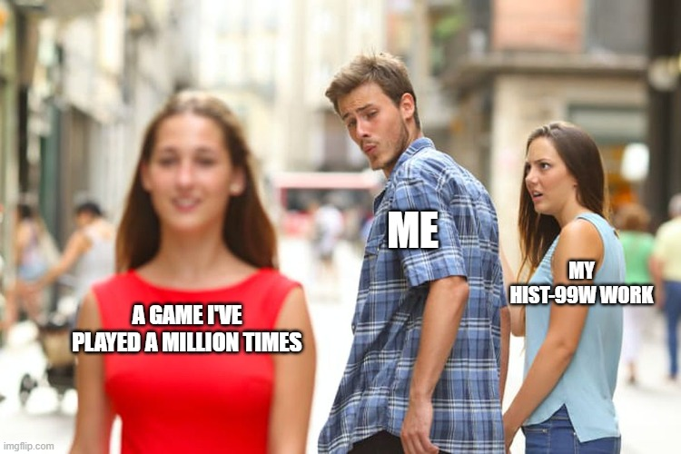
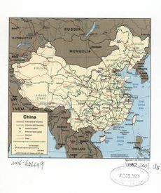

James House
My name is James House and I am a History major who is looking to gain my teaching credential after college in order to teach at the high school level. I specialize in American History so that is the subject that I would like to teach. I am from Anaheim Hills California and went to High School at Canyon High School. If I were to return to Canyon to teach there that would be great but I would like to take any teaching job that I can find in the Orange County area or counties nearby. My hobbies include playing basketball, video games, and going to the beach. I also enjoy riding bikes, paddleboarding and just being outside in general.
I am looking to apply to schools to get my teaching credential after graduating from UCR in 2022. From there I plan to teach at the High school level and then later in my teaching career to go back to school and get my masters and possibly later get my PHD. I originally planned on teaching at the college level and that might still be my plan with the programs to get a PHD in the arts side becoming easier and easier over time. This is all speculation though so I will most likely stick with my plan of going to get my teaching credential after receiving my Bachelors. I would be happy to student teach out of college or even during my senior year in order to gain the experience to teach at the High school level. I very much look forward to talking to students and interacting with them, learning to create my own lesson plans, tests, and lectures. It will all be very exciting becoming a new teacher.
Thank you for coming to my resume website and taking the time to read about my plans and my goals. If you want to contact me my email is housejames14@gmail.com I look forward to my future in teaching and academics and am very excited to be at a school whether it be public or private. I am open to any and all offers that any schools and school districts have for me. I thank you for making it all the way to the bottom of my website and would be very grateful if you checked out my socials to get to know me better and see if I would be a good fit and if I am what you are looking for in a teacher and/or student teacher. I look forward to growing into a great teacher and look forward to the many connections that I will make with the staff and students at whichever school I end up at. This Resume is an example of my typing skills which is exhibiated by how fast of a speed I typed this all at. I usually hover around 80-105 words per minute which while it is not the best typing speed it is vastly ahead of the majority of typists. I pride myself in being able to teach people how to do things as well as being the best learner that I can be which I believe will translate into me becoming the greatest teacher that I can possibly be. Thank you for reading this I hope you have a great day and I really appreciate this.
Experience
Barista
• Learned skills on how to interact with customers
• Became a shift lead which means I make more as well as get keys to the store and tell the other Baristas what I need from them
•Experience with ipad register systems as well as counting and dealing with money
Cashier
•Responsible for taking orders while taking the money at the same time
•Responsible for handling the touch screen kiosk and making customers uncomfortable by having them take their order there
Camp Counselor
• Took my campers on hikes
• Dealt with kids under 7 years old which is very stressful
• Made sure they were all happy and having fun
• Taught them all about the nature around them through song and dance.
Education
University of California Riverside
Irvine Valley College
Irvine Valley College
Portfolio
 




